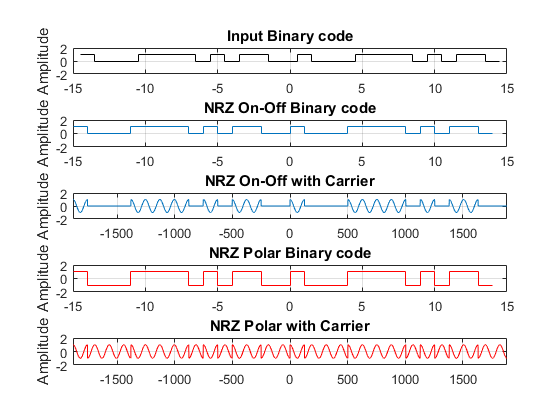

Contents
Section A
pnSequence1 = comm.PNSequence('Polynomial',[4 3 0], ...
'SamplesPerFrame',30,'InitialConditions',[0 0 0 1]);
Binary_Random_Input = pnSequence1();
[Binary_Random_Input(1:15) Binary_Random_Input(16:30)];
t = (0:0.05:30*2*pi);
NRZ_on_off = Binary_Random_Input';
NRZ_Polar = Binary_Random_Input';
NRZ_on_off_Carrier = 0*t;
NRZ_Polar_Carrier = 0*t;
for i = 1:length(Binary_Random_Input)
if Binary_Random_Input(i) == 1
NRZ_Polar(i) = 1;
else
NRZ_Polar(i) = -1;
end
end
for i = 1:length(t)
NRZ_on_off_Carrier(i) = NRZ_on_off(floor(t(i)/(2*pi))+1)*cos(t(i));
end
for j = 1:length(t)
NRZ_Polar_Carrier(j) = NRZ_Polar(floor(t(j)/(2*pi))+1)*cos(t(j));
end
figure
subplot(5,1,1);stairs([-length(Binary_Random_Input)/2+1/2:length(Binary_Random_Input)/2-1/2],Binary_Random_Input,'k')
axis([-length(Binary_Random_Input)/2 length(Binary_Random_Input)/2 -2 2]);title('Input Binary code');grid on; ylabel('Amplitude');
subplot(5,1,2);stairs([-length(NRZ_on_off)/2:length(NRZ_on_off)/2-1],NRZ_on_off)
axis([-length(NRZ_on_off)/2 length(NRZ_on_off)/2 -2 2]);title('NRZ On-Off Binary code');grid on; ylabel('Amplitude');
subplot(5,1,3);plot([-length(t)/2+1/2:length(t)/2-1/2],NRZ_on_off_Carrier);
axis([-length(t)/2 length(t)/2 -2 2]);title('NRZ On-Off with Carrier');grid on; ylabel('Amplitude');
subplot(5,1,4);stairs([-length(NRZ_Polar)/2:length(NRZ_Polar)/2-1],NRZ_Polar,'r')
axis([-length(NRZ_Polar)/2 length(NRZ_Polar)/2 -2 2]);title('NRZ Polar Binary code');grid on; ylabel('Amplitude');
subplot(5,1,5);plot([-length(t)/2+1/2:length(t)/2-1/2],NRZ_Polar_Carrier,'r')
axis([-length(t)/2 length(t)/2 -2 2]);title('NRZ Polar with Carrier');grid on; ylabel('Amplitude');

Section B
NRZ_on_off_Carrier_comp = 0*NRZ_on_off;
NRZ_on_off_Carrier = abs(NRZ_on_off_Carrier);
offset = 6;
for k = 1:length(NRZ_on_off)
NRZ_on_off_Carrier_comp(k) = sum(NRZ_on_off_Carrier((k-1)*125+1:k*125))/(2*pi);
end
output_NRZ_on_off = Comparator(offset, NRZ_on_off_Carrier_comp)
Function
function Output = Comparator(Offset, input)
Output = (input>Offset);
end
output_NRZ_on_off =
1×30 logical array
Columns 1 through 19
1 0 0 0 1 1 1 1 0 1 0 1 1 0 0 1 0 0 0
Columns 20 through 30
1 1 1 1 0 1 0 1 1 0 0